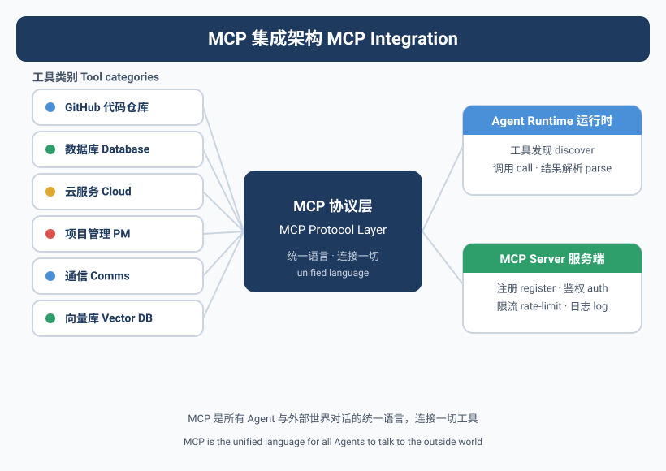
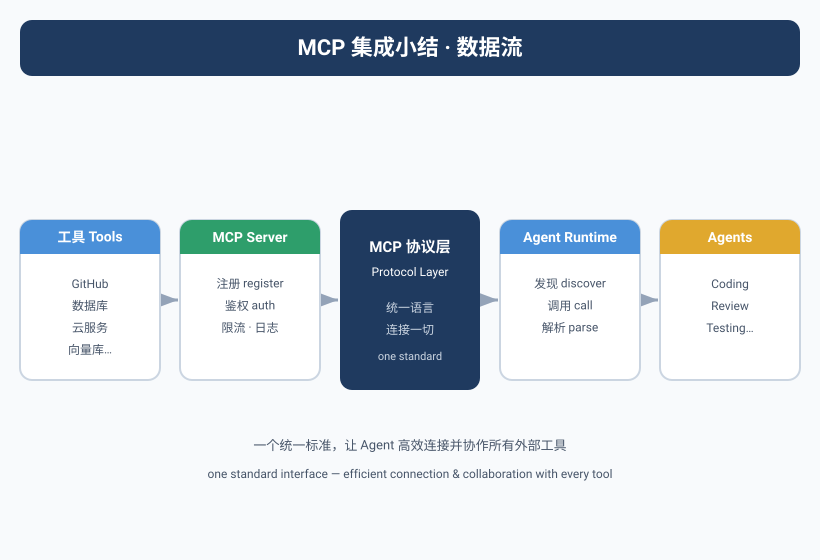

Agent的"手"在哪里
Yason第一次意识到Agent需要工具，是在一个非常尴尬的场景。
他对Kai说："帮我查一下生产环境的Nginx配置，看看为什么502了。"
Kai回答："我没有权限访问服务器。"
又对Max说："帮我在Notion里创建一个新项目页。"
Max回答："我也没有Notion的API权限。"
两个Agent，两个"对不起"，都卡在了同一个问题上——它们会说话，但不会动手。
没有工具的大模型，只是一个会说话的百科全书。有了工具的Agent，才是一个能干活的人。
MCP：模型上下文协议
工具集成的标准方案，Yason选择了MCP(Model Context Protocol)。MCP是一个开放协议，定义了AI模型如何与外部工具和服务交互。
核心架构很简单：
每个工具在一个独立的MCP Server中运行。Agent通过MCP协议调用工具，而不是直接调用API。
Yason的MCP配置长这样：
{
"mcpServers": {
"filesystem": {
"command": "npx",
"args": ["-y", "@modelcontextprotocol/server-filesystem", "/opt/data"]
},
"github": {
"command": "npx",
"args": ["-y", "@modelcontextprotocol/server-github"],
"env": {
"GITHUB_TOKEN": "${GITHUB_TOKEN}"
}
},
"database": {
"command": "python",
"args": ["/opt/agents/mcp-servers/db-server.py"],
"env": {
"DB_URL": "${DB_URL}"
}
},
"search": {
"command": "npx",
"args": ["-y", "@modelcontextprotocol/server-web-search"]
},
"feishu": {
"command": "python",
"args": ["/opt/agents/mcp-servers/feishu-server.py"]
}
}
}
配置完之后，Agent就"长出"了手——它可以读文件、写代码、查数据库、发飞书消息、搜索网页。
MCP生态系统：开源的市场
Yason花了很长时间才意识到一个事实：绝大多数MCP服务器不需要自己写。
到2025-2026年，MCP生态已经爆炸式增长。GitHub上有一个叫做"Awesome MCP Servers"的社区维护列表，收录了数千个开源的MCP服务器实现。
常见的服务几乎全有现成的：
社区MCP服务器示例：
┌─────────────┬────────────────────────────────┐
│ 服务 │ 开源MCP Server │
├─────────────┼────────────────────────────────┤
│ GitHub │ @modelcontextprotocol/server-github│
│ Slack │ @modelcontextprotocol/server-slack │
│ Notion │ @modelcontextprotocol/server-notion │
│ Postgres │ @modelcontextprotocol/server-postgres│
│ SQLite │ @modelcontextprotocol/server-sqlite │
│ Filesystem │ @modelcontextprotocol/server-filesystem│
│ Puppeteer │ @modelcontextprotocol/server-puppeteer│
│ Brave Search │ @modelcontextprotocol/server-brave-search│
│ Redis │ community/server-redis │
│ Sentry │ community/server-sentry │
│ Jira │ community/server-jira │
│ Figma │ community/server-figma │
│ Google Drive │ community/server-google-drive │
│ Docker │ community/server-docker │
│ Kubernetes │ community/server-kubernetes │
└─────────────┴────────────────────────────────┘
Yason的5个MCP Server中，4个是社区现成的，只有1个(Feishu飞书集成)是自己写的——因为飞书的API比较特殊，社区还没来得及覆盖。
2025年还在自己写MCP Server，就像2020年还在自己写React组件库一样——除非你要对接的是冷门服务，否则社区一定有现成的。
Yason的"好物推荐"列表：
- server-github：PR、Issue、Code Review、Actions，Kai的日常工作全覆盖
- server-postgres：支持只读模式，配合Yason的权限控制层使用
- server-puppeteer：浏览器自动化，Max用来做竞品分析和数据采集
- server-slack：跨平台通知，连接飞书和Slack
- server-sentry：错误监控，异常时自动创建Issue
A2A vs MCP：什么时候用什么
随着Yason的工具链越来越丰富，他遇到了一个新的困惑：A2A和MCP的关系到底是什么？什么时候该用哪个？
MCP(Model Context Protocol)：Agent调用工具的协议。解决的是"Agent怎么操作外部系统和数据"的问题。
A2A(Agent-to-Agent)：Agent之间通信的协议。解决的是"Agent怎么委派任务给另一个Agent"的问题。
Yason画了一张对比图：
# MCP的场景：Agent用工具
Agent ──MCP──→ Filesystem Server ──→ 读写文件
Agent ──MCP──→ Database Server ──→ 查询数据库
Agent ──MCP──→ GitHub Server ──→ 创建PR
# A2A的场景：Agent找Agent帮忙
Agent A ──A2A──→ Agent B ──MCP──→ Database Server
└─MCP──→ Filesystem Server
关键区别：
| 维度 | MCP | A2A |
|---|---|---|
| 通信对象 | Agent → 工具/服务 | Agent → Agent |
| 消息格式 | 工具调用(function call) | 任务委派(task delegation) |
| 返回结果 | 工具输出(数据/文件/状态) | 任务结果(交付物/进度/状态) |
| 适用场景 | 文件操作、API调用、数据库查询 | 任务分解、子Agent管理、跨域协作 |
| 是否需要"理解" | 不需要——工具按规则执行 | 需要——Agent要理解任务意图 |
而且两者可以共存。Yason的Kai在日常工作中：
- 通过MCP调用GitHub Server创建PR
- 通过A2A委派编码任务给OpenCode子Agent
- OpenCode子Agent再通过MCP调用Filesystem Server写代码文件
一条任务链上，MCP和A2A交替出现，各司其职。
MCP是Agent的手，A2A是Agent之间的对讲机。手不能打电话，对讲机不能搬东西——两个都需要。
MCP + RAG：知识库集成模式
Yason在接入MCP工具后，发现了一个更强大的组合——MCP加上RAG(检索增强生成)。
传统的MCP Server是"请求-响应"模式：Agent问，工具答。但很多场景下，Agent需要的不是某个API的实时数据，而是知识库中积累的文档和经验。
Yason的解决方案是在MCP和知识库之间加一层RAG：
Agent ──MCP──→ Knowledge Server ──RAG──→ 向量数据库
└──→ 经验卡片库
└──→ 技术文档库
Knowledge Server的实现：
@app.tool()
def query_knowledge(query: str, scope: str = "all"):
"""
检索知识库，返回最相关的内容。
scope: "technical" | "experience" | "all"
"""
# 向量化查询
query_vector = embed(query)
# 根据scope检索不同的索引
if scope in ["technical", "all"]:
docs = vector_db.search(query_vector, index="technical_docs", top_k=5)
if scope in ["experience", "all"]:
cards = vector_db.search(query_vector, index="experience_cards", top_k=5)
return {
"documents": docs,
"experience_cards": cards
}
这个组合让Kai在写代码时可以自动参考过往经验：先通过MCP调用Knowledge Server，RAG检索出相关的历史决策和踩坑记录，然后再开始编码。Yason统计过，加上这个模式后，Kai重复踩坑的概率降低了约80%。
MCP给了Agent触达数据的能力，RAG给了Agent理解数据的能力。两者结合，Agent才能从"查资料的实习生"变成"有经验的工程师"。
Yason的Agent工具栈
经过几个月的迭代，Yason的每个Agent都有一套专门的工具集。
Kai(开发Agent)的工具栈
# /opt/agents/kai/mcp-config.json
{
"mcpServers": {
"filesystem": { ... }, # 读写代码文件
"github": { ... }, # PR、Issue、Code Review
"search": { ... }, # 查技术文档
"terminal": { # 自定义：执行Shell命令
"command": "python",
"args": ["/opt/agents/mcp-servers/safe-shell.py"]
},
"codebase-index": { # 自定义：代码索引
"command": "python",
"args": ["/opt/agents/mcp-servers/codebase-rag.py"]
}
}
}
这个"safe-shell"工具是Yason自己写的——它允许Agent执行Shell命令，但有安全限制：
# safe-shell.py - 安全的Shell执行MCP Server
import subprocess, shlex
from mcp.server import Server
SAFE_COMMANDS = ["git", "npm", "python", "ls", "cat", "grep", "find"]
BLOCKED_PATTERNS = ["rm -rf", "dd if=", "> /dev/", "chmod 777"]
@app.tool()
def run_command(command: str, cwd: str = None):
cmd_parts = shlex.split(command)
if cmd_parts[0] not in SAFE_COMMANDS:
return {"error": f"命令 {cmd_parts[0]} 不在允许列表中"}
for pattern in BLOCKED_PATTERNS:
if pattern in command:
return {"error": f"命令包含禁止模式: {pattern}"}
result = subprocess.run(
command, shell=True, cwd=cwd,
capture_output=True, text=True, timeout=30
)
return {
"stdout": result.stdout[-2000:],
"stderr": result.stderr[-1000:],
"exit_code": result.returncode
}
Max(运营Agent)的工具栈
{
"mcpServers": {
"search": { ... }, # 网页搜索和信息采集
"feishu": { ... }, # 飞书消息和文档
"browser": { # 浏览器自动化
"command": "npx",
"args": ["-y", "@modelcontextprotocol/server-puppeteer"]
},
"analytics": { # 数据分析
"command": "python",
"args": ["/opt/agents/mcp-servers/analytics.py"]
}
}
}
工具权限模型
工具越多，风险越大。Yason很快就面临了权限管理的问题——不是所有工具都应该对所以Agent开放。
比如：Kai需要写代码，但他不应该能直接修改生产数据库。Max需要访问飞书，但他不应该能删除Repo。
Yason设计了一个三层权限模型：
权限层级:
Level 0: 只读工具
- search, read-file, ls, git log
- 所有Agent默认拥有
风险: 极低
Level 1: 写入型工具(非破坏性)
- write-file (限workdir), git commit, feishu send
- 需要Agent在任务中获得Yason授权
风险: 中低
Level 2: 高危工具
- shell (非限制模式), database write, git push (生产分支)
- 每次使用需要Yason单独确认
风险: 高
具体实现：
# /opt/agents/permissions.yaml
agents:
kai:
default_level: 1
tools:
filesystem: { level: 1, paths: ["/code/repos/*"] }
github: { level: 1, branches: ["feature/*", "fix/*"] }
terminal: { level: 1, commands: ["git", "npm", "python"] }
database: { level: 2 # 写数据库需要确认 }
max:
default_level: 0
tools:
search: { level: 0 }
feishu: { level: 1, actions: ["send_message", "create_doc"] }
browser: { level: 0 }
最小权限原则
随着工具越来越多，Yason提炼出一条核心安全原则：每个Agent只应该拥有它完成任务所必需的工具。
这条原则在实际落地中意味着：
- 按角色分组：开发Agent只有开发工具，运营Agent只有运营工具，两者不交叉
- 运行时权限降级：Agent在非工作时间(比如凌晨的自动复盘)只能使用只读工具
- 工具级白名单：不是"不能访问敏感工具"，而是"默认只能访问白名单内的工具"
Yason的权限配置文件经过几个月迭代后，每个Agent的MCP工具列表都是仔细裁剪过的。Kai没有飞书发送权限，Max没有Shell执行权限，Rex没有GitHub写入权限——每一条权限的缺失，都少了一个事故点。
工具权限管理不是在限制Agent，而是在保护你自己。工具越多，权限越要精细。Yason的规则很简单：Agent拥有的工具数量跟它的权限层级成反比——层级越低，工具越多；层级越高，工具越少。
安全防线的惨痛教训
Yason在工具安全上的意识，来自一次真实事故。
有个Agent(不便透露是谁)在调试一个数据库问题时，直接执行了一条SQL：
DELETE FROM users WHERE last_login < '2024-01-01';
Agent的本意是清理测试数据，但它连的是生产数据库。
幸运的是，有一层保护在起作用——Yason的MCP Server在写入型SQL前会检查table名和where条件：
@app.tool()
def execute_query(sql: str):
# 安全检查
sql_lower = sql.lower().strip()
dangerous_patterns = ["drop", "truncate", "delete", "update"]
for pattern in dangerous_patterns:
if sql_lower.startswith(pattern):
if not confirm_with_yason(sql):
return {"error": "高危SQL已阻止，已通知Yason"}
return db.execute(sql)
这次事件后，Yason加了一条硬性规则：任何高危操作，必须先发飞书卡片给Yason确认，确认后才能执行。
Agent → Yason: ⚠️ 高危操作确认
━━━━━━━━━━━━━━━━━━━━━━━━━━━━━━━━
操作: DELETE FROM users
影响行数: 预估 15,342 行
环境: 生产数据库 (prod-db-01)
┌──────────────────────────────┐
│ 确认执行 │ 拒绝执行 │
└──────────────────────────────┘
Yason在手机上看一眼卡片，点一下"确认"或"拒绝"，全程3秒。这个确认机制虽然多了一步，但从那以后，再也没有发生数据库误操作。
自定义工具：让Agent做你想做的事
MCP生态里有大量现成的工具，但Yason发现，真正提高效率的是一些定制化的小工具。
比如他写了一个"任务依赖分析器"：
@app.tool()
def analyze_dependencies(task_description: str):
"""
分析一个任务描述，识别出所有的依赖项和前置条件。
"""
prompt = f"""
分析以下任务的依赖关系：
任务：{task_description}
输出JSON格式：
{{
"dependencies": ["前置任务A", "前置任务B"],
"requires_approval": true/false,
"estimated_complexity": "low" | "medium" | "high",
"suggested_split": ["子任务1", "子任务2"]
}}
"""
response = llm.call(prompt)
return parse_json(response)
这个工具让Kai在接任务前先做一次"可行性分析"，而不是闷头就开干。Yason后来统计过，加上这个工具后，任务中途返工率下降了60%。
工具链的终极目标不是让Agent能做更多事，而是让Agent在做事之前先"想清楚"。工具是Agent的延长线，而不是它的控制器。
本章小结
- 工具链是Agent从'会聊天'到'会干活'的关键——但工具越多，管理成本越高
- MCP是Agent→工具的纵向协议，A2A是Agent↔Agent的横向协议，两者互补
- MCP生态已成熟——GitHub、Slack、Notion、Postgres等常用服务都有开源MCP Server
- 最小权限原则：每个Agent只应该有完成任务所需的最小工具集
- 工具链的终极目标是让Agent先'想清楚'再执行
下一章预告：Agent团队能自己进化吗——那个迷人的"自学习"机制，以及Yason的Agent团队是怎么逐月变得更聪明的。
本文来自专栏《给AI当老板》，完整系列持续更新中：GitHub - VokoForge/ai-prism
